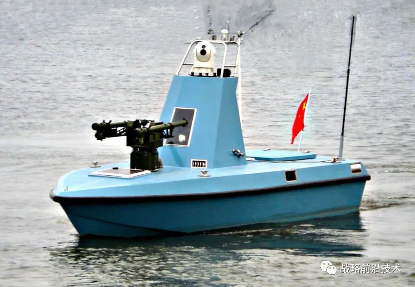

无人水面艇国内外现状
Abstract Keywords
Citation Yao Qing-sheng.无人水面艇国内外现状.FUTURE & CIVILIZATION Natural/Social Philosophy & Infomation Sciences,20240408. https://yaoqs.github.io/20240408/wu-ren-shui-mian-ting-guo-nei-wai-xian-zhuang/
转载自 无人水面艇国内外现状
本文节选自：海上无人装备体系概览/ 董晓明主编. — 哈尔滨: 哈尔滨工程大学出版社，2020.1（国之重器出版工程）
※1、国外发展现状
目前，国外无人系统正在快速发展，越来越多的无人系统被研制出并投入实际应用，以降低作战成本，减少作战伤亡。国外诸多舰艇已搭载了部分成熟的无人系统设备或正在对尚未成熟的进行试验，关于这方面的研究，目前美国处于最领先地位。
无人水面艇的雏形最早诞生于二战期间，主要以欺骗性目标和靶艇为主，完全依赖舰员远程遥控操作。20世纪90年代以来，随着战争模式逐渐转向信息化作战，以无人系统为代表的信息化装备进入蓬勃发展期，无人水面艇在反潜、反舰、反水雷、部队保护、反恐等方面的潜能渐渐展露出来，在此背景下出现具有一定自主能力的无人水面艇。2000年以来，随着国外海军不断加大对它的研发力度，该领域取得了丰富的成果。目前，开展无人水面艇研制的主要包括美、以、欧、日等国，各国发展并装备的无人水面艇多为集反水雷战、反潜战、信息/电子战等多种能力于一体的多功能无人水面艇。
※1、美国处于领先地位，已研制并装备多种型号
美国从1990 年代开始研究无人水面艇，并界定了无人水面艇的一系列标准，美国在无人艇的研发方面始终处于世界领先地位，目前为止已经研发成熟或已应用服役的无人水面艇多达20余型，研究体制完备，发展目标和路线明确，研发产品逐步系列化。美国2007年出台的《海军无人水面艇主计划》主要针对无人水面艇的艇体设计、布放技术、自主/协作能力和负载配置方案等四个领域进行全面系统的研究。在无人水面艇方面，美国始终站在技术发展的制高点，代表着这一领域的发展方向。美国正式服役的USV主要有“海上猫头鹰”、“斯巴达侦察兵”、“X-2”号、“幽灵卫士”、“海狐”等。
“海上猫头鹰”是美海军开发水面无人艇的首次尝试。该艇长3m，最大航速45节（83kmh），续航力为10小时（22km/h航速）或24小时（9km/h艇速），吃水仅18cm，可在近岸非常浅的水域活动。该艇可携200kg的有效载荷，包括前视和侧扫声纳、星光／日光／红外摄像机、激光测距仪等，可由长度11m以上的舰船携载、投放和回收。改进型“海上猫头鹰”可用作载舰侦察艇，为其他武器标示海上或岛礁附近的目标，必要时还可为载舰兵力提供保护，甚至还拥有对水下无人潜航器实施控制的能力。
“斯巴达侦察兵”是美国近年来研制的水面无人艇的典型代表，它是“美国先期技术概念演示项目”之一。该艇针对美国海军的需求，由美国海军水下作战中心、诺格公司、雷声公司以及洛马公司联合研制。海军陆战队用它执行远征后勤和再补给等任务，特种部队认为该艇可用于水文调查或其他侦察和欺骗任务，陆军认为该艇可以配备“地狱火”导弹等武器执行精确打击任务，协助陆军在内陆湖泊地带作战。该艇有两种型号，分别长7m、11m，各自可携带1 360kg、2 360kg的有效负载。其具有遥控和自主运行两种模式，具备半自主能力，能够根据不同的任务需求更换任务模块。2003年8月首次海试，2005年4月首次参加实弹射击试验。已被正式部署到“葛底斯堡号”巡洋舰（CG 64），参加过“持久自由行动”和“伊拉克自由行动”。
同时，该艇也列装在濒海战斗舰上，濒海战斗舰携带配备反水雷模块的“斯巴达侦察兵”无人水面艇以11米长的刚性充气艇为基础，执行远程布放、拖曳、回收猎雷声纳；清查航道，提供海底图像的细节；将视频图像和声纳数据传给反水雷舰，为反水雷舰艇进出港口提供港口护卫；以遥控或半自主的模式作业，并将数据实时传递出去。如图3-8所示，舰队级无人艇样艇也于2014年10月被选为濒海战斗舰的水雷对抗装备，并携带无人感应扫雷系统（UISS）。
美国海军新型三体无人快艇“X-2”号，能够配备雷达、声纳、摄像头、导航系统和防撞系统，还安装有先进的网络通信系统和情报侦察监视系统。X-2号长约15m，宽约12m，能以28～55节（52～102km/h）的航速在8级海浪中自主巡航。通过无线电和全球定位系统，控制人员可以在数百千米外通过控制平台下达指令，从指令发送到无人艇执行动作只需18秒，定位控制精度可达3m以内。
“幽灵卫士”主要用于海上警戒和防护、运送货物（150kg）、收集情报和海上监测等。其最大功率为266马力（196千瓦），可按预定程序自动行驶，并可随时更改航路。该艇于2003年9月首次海试。
“海狐”由美国西风海事公司研发，目前在美国海军中服役的主要有“海狐”MK1和MK2两型，其可搭载雷达、声纳、摄像机、目标跟踪与防抖软件系统、数字变焦红外照相机、数字变焦日光彩色照相机、导航照相机、4个波段（军民各2个）的增强型通信系统。美国海军主要利用该艇进行江河地区的作战评估以及远征部队的安全保障等，2006年首次海试。
2015年夏季，SHARC（搭载传感器的远程无人艇）在美国与澳大利亚联合军演中被用作为海上情报、监视与侦察节点接受测试。2015年秋季开始与P-8A反潜机的联合应用试验，试验包括数个SHARC及其他系统，构成了覆盖水下—水面—空中的网络。
美国无人水面艇的发展思路和顶层规划十分明确和清晰。21世纪初，美国海军在《21世纪海上力量—海军设想》中提出，在2015年前将新型无人平台引入未来网络化作战体系中。2007年7月，美国海军首次发布《海军无人水面艇主计划》，设定了无人水面艇的7项使命任务—反水雷战、反潜战、海上安全、反舰战、支持特种部队作战、电子战、支持海上封锁行动，为美国工业界、学术界和国际合作伙伴指明了未来无人水面艇的发展重点及技术攻关方向。此后，美国军方开始统筹各军种无人系统发展，并统一发布《无人系统综合路线图》，对无人水面艇的作战需求、关键技术领域以及与其他无人系统之间的互联互通性进行了总体规划。
※2、以色列发展仅次于美国，部分型号已装备部队
以色列由于拥有丰富的无人机研制经验，因此在无人水面艇研制领域独具优势，通过转化先进的无人机技术，研发的无人水面艇处于世界先进行列，产品得到了实际应用并已出口海外。
以色列已开发多种型号，如图3-9和图3-10，包括拉斐尔公司和航空防务系统公司联合开发的“保护者”，拉斐尔公司的“海上骑士”，航空防务系统公司的“海星”和“卡塔娜”，埃尔比特系统公司的“海貂鱼”、“银色马林鱼”和“海鸥”等，其共同特点是充分借鉴无人机技术，并采用模块化设计。其中“保护者”项目开展最早，发展最为成熟，首批12艘于2006年服役以色列海军。而“海上骑士”是“保护者”的升级版，继承了“保护者”的基本装备和高速航行的优点，但其体型更大更长，具有更大的油箱和更大范围的通信功能，在偏远地区也能灵活操作，而且具备了一个突出功能——发射导弹。
※3. 欧亚多国积极推进研制
英国也有多型在研或已交付使用的无人水面艇，主要包括“快速机动扫雷技术”（FAST）、“海上系统无人快速靶标”（FMTD）、“哨兵”、“FIAC RT”无人目标艇、“C-CAT4多功能型”、“C-Sweep反水雷型”、“Atlas远程综合感应扫雷系统”和“翡翠鸟”（图3-11），其中“翡翠鸟”在C-Sweep的基础上改造而成，专为水雷对抗任务设计，是英法海事水雷对抗项目的一部分。
法国在研或已交付使用型号主要包括“检验者”（MK1/MK2）、Rodeur、Sterenn Du和Catarob T-02，其中“检验者”包括MK1和MK2两种型号，MK2为升级版本，采用双柴油机喷水推进，最高航速达35节（图3-12）。
加拿大在研或已交付使用型号主要包括“萨普尔”、“梭鱼”、“锤头”和“翠鸟”。其中“翠鸟”是加拿大机器人公司开发的一型无人水面艇，能在拒止水域进行长时间的水文研究，是一型可靠且易于使用的无人数据采集系统，可以提高测试重复性，同时降低研究成本，包括M100和M200两种型号（图3-13）。
Delfim是由葡萄牙DSOR（动力系统和海洋机器人实验室）研发的小型自动航行的双体ASV（自动水面船舶），用于与AUV（自动水下船舶）联合作业，执行海洋数据的实时采集和传输。ASV上装有DGPS、USBL（水下定位装置）、高速通信模块以及海洋数据测量设备，在执行任务时，ASV向AUV传输定位数据以供AUV定位，AUV向ASV传输海洋测量数据，ASV再将这些数据传回岸边或者周围的船舶。该项研究由欧盟资助，执行时间是1998年到2000年。
意大利热那亚CNR-ISSIA研究机构研发的Charlie号USV是一艘双体船，主要作用是在南极洲对海洋微表层进行取样和收集大气海洋界面的数据以及在浅水区域探测鱼雷。该船由无刷直流电机驱动，并在船上配备太阳能板。Caccia等对Charlie导航、控制、路径规划和避碰均有研究，并进行了很多相关实验。
日本发展的水面无人艇主要有UMV-H（高速型）、UMV-0（海洋型）和OT-91型。其中，OT-91型为最新研制型号，采用喷水推进，最高航速40节，主要用于海上情报侦察和反水雷等。日本Eco Marine Power公司于2014年5月对外发布了Aquarius无人艇，该艇采用三体船结构，长5m，翼展8m，吃水1m，船体使用轻量级复合铝制材料，采用太阳能和电力混合动力，巡航时速最高6节，非常适合在浅水水域进行操作。
其他国家典型的在研或已交付USV型号还包括：德国的Rheinmetall和Sonobot，意大利的U-Ranger，新加坡的Venus（图3-14），瑞典的SAM 3，丹麦的SAV级，日本的Aquarius等。
国外水面无人艇研制、生产走过了20多年的历程，随着无人化、智能化技术的不断进步，水面无人艇任务领域将不断拓展，型号更趋成熟。如表32，列出了美国、英国、法国、以色列等国家的无人水面艇典型型号名称、开发商及其服役（或研制、试验）年份。
※2、国内发展现状
21世纪以来，无人水面艇开始受到国内重视，各研究机构纷纷投入力量开展研发工作，已研制出具有一定自主导航控制能力的无人水面艇或样艇。目前，我国从事无人水面艇相关研究的机构主要有中国船舶重工集团公司（简称中船重工集团）、中国科学院沈阳自动化研究所、哈尔滨工程大学、上海大学、海军工程大学、航天新光公司、珠海云洲智能科技有限公司、苏州前卫公司等。国内现有无人水面艇的主要情况如下。
※1. 中船重工集团
2016年4月，中船重工集团701研究所研发出具有完全自主知识产权的“海翼1号”无人艇。该艇长约6.8 m，宽2.4 m，排水量约2.8 t，最高航速超过35 kn，配备有北斗、惯导、导航雷达、一体化光电系统及超短波无线通信设备。具有自主控制、岸基远程遥控和人工驾驶三种控制模式，具备复杂海情下的自主巡逻、搜索取证功能，主要用于完成海警执法和警戒巡逻等任务。
中船重工集团716研究所研制出新型多用途无人作战艇JARI-USV（图 315）。该艇长约15 m，排水量20 t左右，采用柴油机动力，最大时速78 km/h（约42 kn），续航时间12 h。左右各搭载了一个4联装垂发单元，一次可搭载8枚反舰或防空导弹，再加上其左右各一个的单管鱼雷发生装置以及舰首的30 mm自动火炮，使其能够执行防空、对海以及反潜等多种作战任务，同时还搭载了四面相控阵雷达。
另外，在2017年12月上海国际海事展上，中船重工集团707研究所展示了新型智能无人艇。该艇配备了先进的导航雷达、全球定位系统、红外传感器、摄像头等，能够获取周围的海上图像，搜集情报，进行实时监视，主要用于警用执法、海洋资源调查等任务领域。
※2. 沈阳自动化研究所
沈阳自动化研究所研制了BQ-01、GZ-01、“先驱号”、“勇士号”等多型无人水面艇。其中BQ-01半潜式无人水面艇（图316）采用柴油机动力，半潜式航行，仅通气管露出水面，耐波性好，具备拖曳拖体航行能力，具备手动遥控、自主航行两种航行模式，主尺度6.1×2.0×1.5米（不含桅杆），桅杆高度5.0米，航行器重量≤4500千克，遥控距离10千米，续航时间24小时/15节，拖曳力10,000牛/10节，最大航速15节，巡航速度10节，可独立使用执行水面情报、监视与侦察（ISR）等任务，也可拖曳拖体作业开展探雷，主要用于海洋石油海管探测等。GZ-01无人跟踪艇具备自主、遥控、人工驾驶三种功能，搭载了多种探测载荷，主要包括导航雷达、激光雷达、夜视仪、超短基线、水下摄像机、水下照相机等。艇长6.6米，艇宽2.5米，排水量3吨，最大航速25节，续航力40小时/15节，100小时/10节，工作海况4级，生存海况6级，主要用于对AUV等水下运动目标进行自主跟踪，采用模块化设计，可加装大气/海洋环境探测等其它任务模块。
2018年10月，第十三届中国大连国际海事展览会在大连举办，沈阳自动化研究所海洋信息技术装备中心“先驱号”无人水面艇、“勇士号”无人水面艇、半潜式无人艇等在海洋智能装备领域的最新科研成果参加展出。“先驱号”无人水面艇可搭载水下摄像机、搜索与导航雷达、激光雷达、红外热像仪等有效载荷。“勇士号”无人水面艇具备人工驾驶、遥控和自主控制三种工作方式，且可相互灵活切换，搭载光电、雷达等传感器，可对视距内水面目标实施自主搜索、识别和决策，对特定目标进行跟踪取证，并具备符合海事规则的自主避碰能力。
※3. 哈尔滨工程大学
哈尔滨工程大学主要研发两型无人水面艇——6m级和12m级。如图317所示，2009年研制的无人水面艇原理样机具备手操、遥控、半自主和全自主四种工作模式，总长6.5米，最大航程250公里，能在二级海况下稳性航行，具有自扶正功能，可在复杂多障碍物环境下自主避障航行，主要用于海上战区环境侦察、巡逻警戒、抵近侦察。
2017年底，哈尔滨工程大学和深圳海斯比船艇公司联合研制的“天行一号”新型无人艇亮相广东湛江中国海洋经济博览会。该艇使用油电混合动力，全长12.2 m，满载排水量7.5 t，最高航速超过50 kn，最大航程1000 km。可自主航行、多障碍物、动态目标环境下自主避障航行，主要用于海洋水文气象信息采集、海底地形地貌扫描测绘等。
哈尔滨工程大学研制的上述无人水面艇，其最大航速均超过30节，采用玻璃钢全封闭结构，柴油机加喷水推进方式，无人水面艇上安装了可见光及红外光电系统、导航雷达，可见光/红外组合进行近距离障碍物探测，雷达进行远距离探测，上述探测信息用于无人水面艇避碰，其自主导航控制系统可在宽阔低海况海域对静止或低速单一目标进行自主避碰，在给定的电子海图配合下可自主规划从起点到目标点间的路径。
※4. 上海大学
上海大学针对海洋岛礁、海岸线浅水域海底地形地貌的海图测绘和海洋资源调查等应用，自主研制了“精海”系列无人艇（图318、图319），采用开放式平台系统架构，可方便加载各种传感、侦察、测量等任务载荷。
“精海1号”总长6.28米，满载吃水深度0.43米，续航力120海里，最大航速18节，采用玻璃钢全封闭结构，柴油机加喷水推进方式，具有良好的机动性和抗风浪能力。该艇通过遥控方式进行控制，并初步具备在宽阔海域（运动障碍物较少、障碍物速度低）且低海况下的半自主导航能力，具备20千米内超视距操控、自主定位、远程航路规划、动态航路实时更改、航迹自主跟踪、障碍物自主避碰、多模式无线通信、载荷设备/数据/任务远程管理和实时健康监控等能力，其综合性能满足海事测绘部门在浅滩、暗礁等危险水域的测量工作等需要，可自主完成水体环境的探测和测量，包括水深，水下地形地貌，海洋气候以及海洋水文的测量。
“精海2号”总长8.5米，满载重量4吨，续航力200海里，相对于“精海1号”，该艇主要优化了导航和避障算法，提高了航行精度和设计，增加了低温保护设计，使得无人水面艇满足极端环境下的工作要求，并采用模块化设计，提升安全性、航行精度和升级改装能力，具备人工/遥控/自主控制三模控制功能。该艇是由交通运输部东海航海保障中心订购，主要用于东海、黄海、南海、南极等地任务。2014年，该艇随“雪龙”号极地科考船前往南极进行第31次科考。
“精海3号”按照批量产品进行设计，定位为专业海洋测绘工作，采用高集成模块化设计方式，具备即插即用能力，配置先进的“精海智能避障导航系统”，主要搭载在海洋调查船上，用于岛礁和近海浅水域等水下地形、地貌探测，可对测量船不能到达的水域进行数据测量、采集等工作，也可以作为一个搭载平台，搭载其它设备，完成其它使命（如海洋环境监测等）。该艇由交通运输部东海航海保障中心上海海事测绘中心订购。
“精海4号”主要用于内河航道、湖泊、大型水库的水文信息采集和水底地形地貌勘测，具有自主航行和遥控操作两种运动方式，搭载高清摄像头、激光雷达等环境感知工具。
※5. 航天新光公司
在2006年的第6届珠海航展上，航天新光公司曾展示过一个概念模型，即XG-2型无人水面艇。经过2年的研发，当初的概念模型已经成为“天象1号”无人水面艇（图320）。该艇曾在2008年北京奥运会青岛奥帆赛期间，作为气象应急装备为奥帆赛提供气象保障服务。“天象1号”无人水面艇上搭载了气象探测系统，是国内第一艘用于工程实践的无人水面艇。
在2006年的第6届珠海航展上，还有一种全新型号的无人水面艇亮相——“闪电”（XG-3）高速探测无人水面艇，如图321。该艇是一种高性能的无人水面艇平台，可在较恶劣条件下进行特定区域的探测、侦察，甚至是小目标攻击等，速度较快，通常情况下航速可达50节，极限情况下航速可超过60节。
※6. 珠海云洲智能科技有限公司
珠海云洲智能科技有限公司开发了电子对抗无人水面艇，如图322。该艇以舰载7.5米玻璃钢艇为基础，对其进行无人化改造，改造后的无人水面艇可以在有人和无人两种状态下切换，拥有伴航、随航、变航等多种自主航行模式，确保了任务载荷的有效工作。由于任务载荷的需求，需要对船体的稳性重新进行设计、计算、仿真。根据总体以及纵摇、横摇等稳性方面的要求，对各种设备进行了重新布局，加装了相应的配重，并且保证不能对任务载荷造成影响。艇体改造确保了航行的安全，保证了试验的顺利进行。该无人水面艇所有自主控制软硬件设备和与之配套的智能遥控器、控制基站均为公司完全自主研发。

珠海云洲智能科技有限公司还曾于2014年推出一款无人水面艇——“领航者”号（图323），该艇作为一款通用化海洋高速无人船平台，采用M型高速三体船型设计，可在5级海况下航行，主要用于环保监测、科研勘测、水下测绘、搜索救援等领域，目前已经实现了搭载无人机、潜水器实现协同作业。该艇采用油电混合动力系统可提供30节航速，通过岸基遥控台进行遥控控制（图324）。该艇主要特色在于船艇艏部搭载了一架小型四旋翼无人机，能在1000公里范围内通过GPS或者北斗系统实现高精度定位自主航行、自主作业，可进行通信中继及对无人船周边环境进行监控。
近年来，云洲智能把关注点逐渐拓宽向海洋领域和军用技术，成为民营企业“参军”的代表。先后自主研发推出了中国第一艘海洋调查无人艇、隐身无人艇、电子对抗无人艇、协同作战无人艇和导弹无人艇，试图用人工智能变革传统水上作业模式，提高水上作业效率，降低成本，同时增加人员安全性。
※7. 苏州前卫公司
自2001年5月以来，苏州前卫公司先后研制了QW-1、QW-2、QW-3、QW-5等型无人水面艇。如图325所示，QW-5无人水面艇装备搜索雷达、高清晰CCD转塔、激光测距仪、舰对空攻击、远程遥控火控等系统，是集海面、空中为一体的综合作战平台。以遥控为主，可按设定的航线进行简单的自主航行，包括自动执行预定的任务、自动返回基地，也可以由地面以及母船对它进行修改航线或直接通过无线电进行航行控制、执行不同任务的工作控制。由地面站进行无线电摇控操纵，系统操作方便实用，两名操作人员经过简单培训就可以控制无人水面艇。

※3、需求和发展差距
综合国内无人水面艇发展情况可知，虽然无人艇研发取得了一定成果，但尚处于起步阶段，工作成果包括部分高校和研究所开展的无人水面艇技术基础研究和功能单一的无人水面艇实艇设计研制。从整体来看，国内无人水面艇发展首要问题是缺乏长期规划，难以推动国内无人水面艇技术的整体发展。从局部来看，由于无人艇的研发涉及自主导航、目标检测和识别、自动驾驶与避障、推进动力控制、传感集成和数据处理等多个领域，而目前的科研院所和生产企业在人才的学科交叉性上有所欠缺，这是造成目前国内研发迟缓的重要原因。
结合国内的技术现状，以及当前我国的军事战略方针，制定适合我军海军战略转型需求的海上无人系统发展规划，并且从发展初步阶段就强调无人水面艇装备发展的标准化、通用化、模块化，结合我国的工业基础制定指导性文件，促进无人水面艇装备的快速有序发展。在无人水面艇研制设计工作中应以需求为向导，优先发展以侦察、收集战场情报、反潜、反水雷为主的无人水面艇。优先考虑在大中型舰船上适装性能优良的产品。在遥控和自主控制技术的研发中，采用多专业领域合作的方式推进无人水面艇核心装备的更新换代。
根据国外无人艇使用情况和我国的海防需求，可以初步得出我国无人艇的用途主要有以下几个方面：信息化作战、反水雷战、反潜作战、海上安全防护、护航和反海盗、战场态势评估等。
无人水面艇属于新兴装备，我国目前装备部队的仅为遥控扫雷艇，主要用于反水雷作战任务，功能较为单一，与国外存在较大差距。相对于国外无人水面艇系列化、模块化、多任务化特点，我国无人水面艇类型及型号单一，任务功能简单，特别在无人水面艇的自主化、高速长航时等方面还有很多核心技术需要突破。综合分析我国在无人水面艇研发的现状，目前存在的技术差距主要表现在：
1）无人水面艇平台偏小（均10米内），且均不带主动减摇功能，航行、载荷能力均较差，仅限于执行良好海况条件下近海、近岸、浅水区域低端的水文测绘、环境监测等任务，具备高海况适航能力的无人水面艇尚属空白，具备搭载拖曳阵等大型设备能力的无人水面艇亦尚属空白。
2）无人水面艇设计沿袭有人小艇设计，艇型、结构设计未能与无人水面艇无需人员保障、极限恶劣环境工作、极限航程航速要求、极限隐蔽性要求、灵活投放回收方式等相结合，水面艇总体设计新概念亟需挖掘。
3）自主航行能力弱。自主障碍物检测识别和规避是无人水面艇可靠工作、智能化应对作业环境的基础，是无人水面艇技术发展的瓶颈。目前国内无人水面艇在自主障碍物检测识别普遍效果不好，对小型、低矮、近距离障碍物检测识别能力不足，对高海况波浪环境和岸线等干扰反应过大，亟需从单一传感器算法检测性能挖掘和雷达、光电、激光、超声等多传感器融合等两个方面探索提高性能的途径，并在目前基于经验和统计的方法基础上，引入基于数据和机器学习的算法，三管齐下，让无人水面艇真正实现自主化。
4）感知数据融合技术弱。目前国外先进技术可以将ARPA 雷达信息、惯导系统、光电设备、GPS 定位和电子海图等多种感知数据进行融合，得到最终所需的数据形式。而国内在数据融合方面还处于研究阶段，离工程应用还有距离。
5）无人水面艇基本根据具体任务进行设计，未能实现开放架构和模块化设计，未能实现无人水面艇平台、基础载荷、任务载荷的模块化分离和设计；同时，满足无人水面艇要求的小型化、高性能任务模块（如小型多功能雷达、小型拖曳阵声纳、小型多功能声纳等）缺乏且相互间不兼容，总体集成效率低下。
6）无人水面艇湖上及海上试验验证环境场地匮乏，无人水面艇平台功能性能试验验证标准尚未建立，艇总体及任务载荷系统设计标准空白。
※4、美海军无人海上系统采办
美国海军海上系统司令部（NAVSEA）设置了新的组织机构（PEO USC的PMS 406）负责无人海上系统采办。
2018年3月13日，美国海军负责研究、开发与采办的助理部长（ASN (RD&A)）James Geurts 签署备忘录，将原有的濒海战斗舰项目执行办公室（PEO LCS）改名为“无人与小型舰艇”（Unmanned and Small Combatants），即PEO USC。
PEO USC下设多个项目办公室（如表 33），其中PMS 406负责美海军无人海上系统（UMS）的发展、采购、支持等，促进实验和技术成熟以便满足海军舰队的发展需求，包括USV和UUV，以及为完成任务所需的传感器等有效载荷，如图 326所示。
表 33 PEO USC下设办公室的业务范围
| -办公室- | -名 称- | -业务范围- |
|---|---|---|
| PMS 515 | 护卫舰 Frigate /FFG(X) | - |
| PMS 501 | 濒海战斗舰 Littoral Combat Ship (LCS) | - |
| PMS 505 | 濒海战斗舰训练 LCS Training | - |
| PMS 420 | 濒海战斗舰任务模块 \ LCS Mission Modules | - |
| PMS 495 | 水雷战 Mine Warfare | - |
| PMS 406 | 无人海上系统 \ Unmanned Maritime Systems | Ghost Fleet \MCM USV \MHUs \ UISS \ AN/AQS-20 \ Knifefish \ LDUUV \ MEDUSA \ XLUUV/AUP |
| PMS 525 | 国际小型舰艇 \ International Small Combatants |
目录
- 上篇 海上无人装备体系
- 第1章 绪论
- 第2章 海上无人机系统
- 第3章 无人水面艇
- 第4章 无人潜航器
- 第5章 无人水下预置系统
- 下篇 海上无人系统技术及应用
- 第6章 海上无人系统关键技术
- 第7章 海上有人/无人系统协同作战通信技术
- 第8章 海上有人/无人系统协同决策控制技术
- 第9章 无人系统装备作战运用分析
- 第10章 海上无人装备体系发展建议
- 附录A 缩略语表
- 附录B 美国国防部无人系统综合路线图（2017—2042）
Address:Department of Natural/Social Philosophy & Infomation Sciences, CHINA
Biography...
转载或引用本文时请遵守许可协议，注明出处、不得用于商业用途！
Like this article? Support the author with